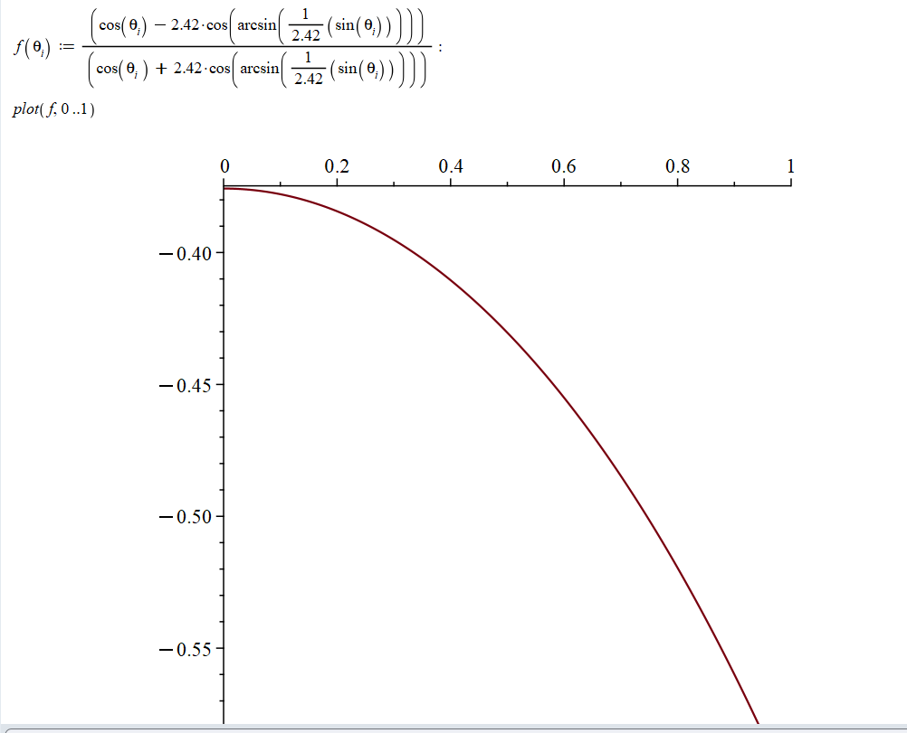

APPLIED MATHEMATICS · ELECTROMAGNETISM · SUMMER READING PROJECT
Electromagnetic Waves & Fresnel Equations
A summer reading project exploring electromagnetic waves at material interfaces, culminating in a derivation of the Fresnel equations for p-polarized waves involving a lossy medium.
OVERVIEW
The Project
During the summer, I worked through the mathematics describing the reflection and transmission of electromagnetic waves at material interfaces.
I began by developing the background needed to understand the standard Fresnel equations and the role of polarization, electromagnetic boundary conditions, and material properties. I then used this foundation to work through a more advanced derivation for p-polarized waves involving a lossy medium.
BACKGROUND
Building the Mathematical Foundation
Before beginning the lossy-medium derivation, I reviewed the mathematical description of electromagnetic plane waves and their behaviour at interfaces.
Plane Waves
I worked with the complex exponential representation of electromagnetic plane waves and the relationship between their electric and magnetic fields.
Interfaces
I studied how incident, reflected, and transmitted waves are related at the boundary between two materials.
Polarization
I examined how the orientation of the electric field affects the reflection and transmission of electromagnetic waves.
MATHEMATICAL FRAMEWORK
Relating the Electric and Magnetic Fields
One relationship I worked with came from representing a plane electromagnetic wave in complex exponential form:
Substituting the plane-wave form into Faraday's law,
gives the relationship
I used this relationship when working with the incident, reflected, and transmitted electromagnetic fields in the Fresnel derivation.
COMPUTATIONAL WORK
Exploring Fresnel Coefficients with Maple
I used Maple to work with and visualize Fresnel coefficient expressions, exploring how the reflection amplitude changes with the angle of incidence.

MAIN DERIVATION
P-Polarization in a Lossy Medium
The main technical component of the project was working through the derivation of the Fresnel equations for p-polarized electromagnetic waves at an interface involving a lossy medium.
Using a research paper as a reference, I followed the electromagnetic field relationships for the incident, reflected, and transmitted waves and worked through the boundary conditions used to relate their amplitudes.
Define the Waves
Set up the incident, reflected, and transmitted electric-field and wave-vector components at the material interface.
Relate the Fields
Use Maxwell's equations and the transverse nature of electromagnetic waves to determine the required electric and magnetic field components.
Apply Boundary Conditions
Match the appropriate field components at the interface and solve the resulting relationships for reflection and transmission.
The complete derivation, including the intermediate field relationships and algebraic steps, is available as a PDF.
View Full P-Polarization Derivation →EXTENSION
Why the Lossy Medium Matters
Unlike an ideal dielectric, a lossy material can dissipate electromagnetic energy. This changes how the transmitted wave behaves inside the material and requires the electromagnetic quantities describing the medium to account for attenuation.
Working through this case allowed me to extend the standard Fresnel framework beyond an ideal transparent interface.
REFLECTION
What I Took Away From the Project
This project gave me experience working independently through a technical mathematical-physics derivation and connecting electromagnetic theory with the behaviour predicted at a material interface.
It also gave me experience using multiple kinds of technical resources: building background knowledge from educational material, using a research paper to guide a more advanced derivation, and using Maple to explore the mathematics computationally.
REFERENCES
References & Resources
Resources I used while building the background for the project and working through the p-polarization derivation.
DERIVATION REFERENCE
Compact formulation of the transparent–absorbing isotropic interface electromagnetic problem
Used as a reference while working through my derivation of the Fresnel equations for p-polarized electromagnetic waves involving a lossy medium.
Read paper →BACKGROUND RESOURCE
Physics LibreTexts
Used to build my foundation in reflection and transmission at material boundaries, polarization, and the standard Fresnel equations before beginning the lossy-medium derivation.
Visit resource →MORE WORK
← Back to all projects